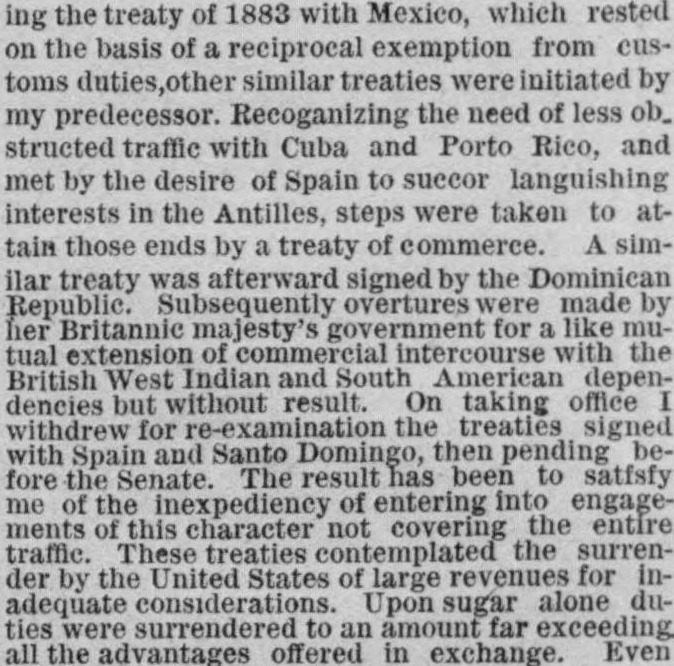
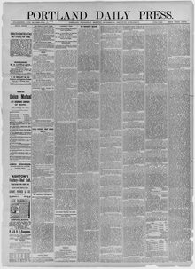

Subsequently overtures were made by her Britannic majesty's government for a like mutual extension of commercial intercourse with the British West Indian and South American dependenciesPosteriormente se hicieron gestiones por parte del gobierno de Su Majestad británica para una extensión mutua similar del comercio con las dependencias británicas de las Indias Occidentales y de América del Sur
The Portland Daily Press. Portland, Me., December 9, 1885. Page 1. Published by N.A. Foster & Co. A daily newspaper, 1862–1921.The Portland Daily Press. Portland, Me., 9 de diciembre de 1885. Página 1. Publicado por N.A. Foster & Co. Periódico diario, 1862–1921. View the originalVer el original


See the full pageVer la página completaAccording to the newspaper, the administration withdrew pending commercial treaties signed with Spain and Santo Domingo for re-examination, having concluded that it was inexpedient to enter into engagements that did not cover entire traffic. The treaties were deemed improvident because they required the United States to surrender large revenues on sugar for inadequate considerations, offered illusory relief to consumers, risked embarrassing questions under favored-nations clauses, and diminished independent control over tariff regulations and revenues.A tenor del rotativo, el ejecutivo retiró del Senado para su reexamen los convenios comerciales pendientes con España y Santo Domingo, por juzgar inconveniente asumir compromisos que no abarcasen la totalidad del tráfico. Se reputó que los pactos eran lesivos porque demandaban a los Estados Unidos renunciar a considerables ingresos tributarios sobre el dulce a cambio de contraprestaciones insuficientes, ofrecían una desgravación ilusoria a los consumidores, entrañaban compromisos delicados bajo el principio de nación más favorecida y restringían el control autónomo de la recaudación y las tarifas arancelarias.
FULL TEXT:TEXTO COMPLETO:
ing the treaty of 1883 with Mexico, which rested on the basis of a reciprocal exemption from customs duties, other similar treaties were initiated by my predecessor. Recoganizing the need of less obstructed traffic with Cuba and Porto Rico, and met by the desire of Spain to succor languishing interests in the Antilles, steps were taken to attain those ends by a treaty of commerce. A similar treaty was afterward signed by the Dominican Republic. Subsequently overtures were made by her Britannic majesty's government for a like mutual extension of commercial intercourse with the British West Indian and South American dependencies but without result. On taking office I withdrew for re-examination the treaties signed with Spain and Santo Domingo, then pending before the Senate. The result has been to satfsfy me of the inexpediency of entering into engagements of this character not covering the entire traffic. These treaties contemplated the surrender by the United States of large revenues for inadequate considerations. Upon sugar alone duties were surrendered to an amount far exceeding all the advantages offered in exchange.iendo el tratado de 1883 con México, que descansaba sobre la base de una exención recíproca de derechos de aduana, otros tratados similares fueron iniciados por mi predecesor. Reconociendo la necesidad de un tráfico menos obstruido con Cuba y Puerto Rico, y encontrado por el deseo de España de socorrer intereses languidecientes en las Antillas, se tomaron medidas para alcanzar esos fines mediante un tratado de comercio. Un tratado similar fue firmado después por la República Dominicana. Posteriormente se hicieron propuestas por el gobierno de su majestad británica para una extensión mutua similar del comercio con las dependencias británicas de las Indias Occidentales y de América del Sur pero sin resultado. Al tomar posesión retiré para reexamen los tratados firmados con España y Santo Domingo, entonces pendientes ante el Senado. El resultado ha sido satisfacerme de la inconveniencia de entrar en compromisos de este carácter que no cubran la totalidad del tráfico. Estos tratados contemplaban la entrega por los Estados Unidos de grandes rentas por consideraciones inadecuadas. Solo sobre el azúcar se entregaron derechos por una cantidad que excedía con mucho todas las ventajas ofrecidas a cambio.